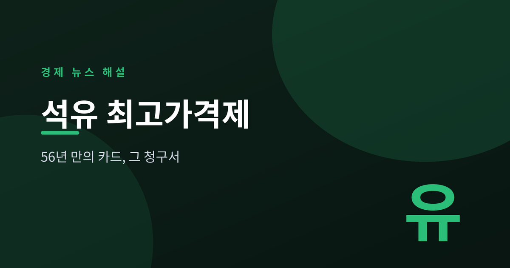
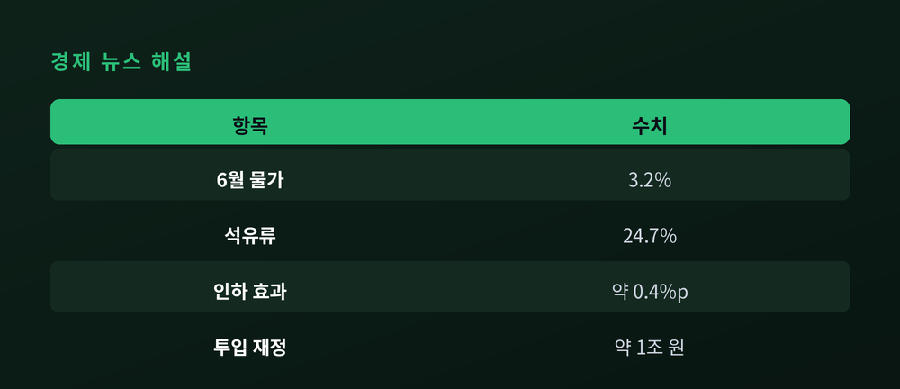
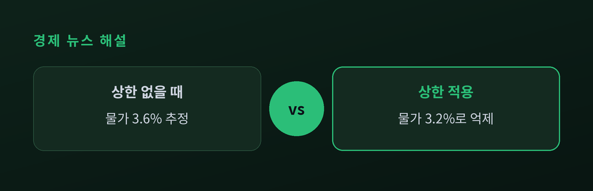
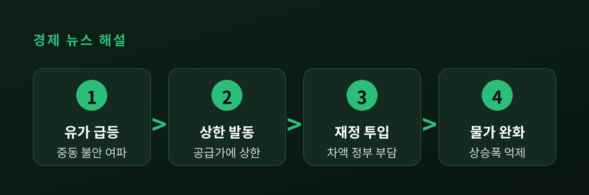

56년 만에 처음 뽑아든 카드의 청구서
기름값이 물가를 흔들었다. 정부는 1970년 도입 후 한 번도 쓰지 않던 제도를 꺼냈다. 그 효과와 비용을 짚는다.

국가데이터처가 7월 2일 발표한 6월 소비자물가는 전년 동월 대비 3.2% 올랐다. 두 달 연속 3%대이며 2023년 12월 이후 2년 6개월 만의 최고치다. 상승을 이끈 것은 석유류로, 한 해 전보다 24.7% 뛰며 전체 물가를 0.93%포인트 끌어올렸다. 석유류 상승폭은 3년 11개월 만에 가장 컸다.
배경에는 중동 정세 불안이 있다. 유가가 급등하자 정부는 지난 3월 13일 '석유 최고가격제'를 발동했다. 2주 단위로 정유사 공급가에 상한을 두는 방식이다. 1970년 석유사업법에 근거가 마련된 뒤 56년간 실제 시행은 처음이었다.
가격 통제는 물가를 눌렀다. 재정경제부는 이 제도가 6월 물가를 약 0.4%포인트 낮춘 것으로 봤다. 제도가 없었다면 상승률이 3.6%에 달했을 것이란 추산이다. 한국개발연구원(KDI)은 1차 시행 효과를 0.4~0.8%포인트로 더 넓게 잡았다.
문제는 청구서다. 상한가를 시장가 아래로 묶으면 그 차액은 누군가 메워야 한다. 정부는 물가를 3% 이내로 억제하기 위해 재정 약 1조 원을 투입한 것으로 전해졌다. 유류세도 휘발유 기준 리터당 763원에서 698원으로 내렸다. 억눌린 가격과 재정 부담이 맞바꿔진 셈이다.
| 항목 | 내용 |
|---|---|
| 6월 물가 상승률 | 3.2% |
| 석유류 상승률 | 24.7% |
| 최고가격제 인하 효과 | 약 0.4%p |
| 투입 재정(추정) | 약 1조 원 |

가격 상한은 원인이 아니라 증상을 다룬다. 국제 유가가 진정되지 않으면 상한과 시장가의 간극은 벌어지고, 재정 부담도 함께 커진다. KDI는 시장 왜곡과 지속가능성을 함께 살펴야 한다고 지적했다.

통화당국의 셈법도 복잡해졌다. 물가가 3%대인 상황에서 한국은행은 7월 16일 금융통화위원회를 앞두고 있다. 성장 둔화와 물가 압력 사이에서 기준금리 2.5% 동결 기조를 이어갈지가 관전 포인트다. 물가 지표에 정책 효과가 섞여 있어, 순수한 물가 흐름을 읽기가 더 까다로워졌다.

정리하면, 6월 물가 3.2%는 급등한 기름값과 이를 억누른 이례적 정책이 함께 만든 숫자다. 눈에 보이는 가격은 낮아졌지만 비용은 재정으로 옮겨갔을 뿐 사라지지 않았다.
핵심 한 줄: 물가를 누른 손에는 재정이라는 대가가 쥐여 있다.
지표의 '진짜 온도'는 상한이 걷힌 뒤에야 드러날 것이다.
이 글은 정보 제공을 위한 해설이며 투자 권유가 아닙니다.
참고 출처: 뉴스핌, 머니투데이, 파이낸셜뉴스, 대한민국 정책브리핑